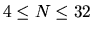

<!DOCTYPE HTML PUBLIC "-//W3C//DTD HTML 3.2 Final//EN">
<!--Converted with LaTeX2HTML 98.1 release (February 19th, 1998)
originally by Nikos Drakos (nikos@cbl.leeds.ac.uk), CBLU, University of Leeds
* revised and updated by:  Marcus Hennecke, Ross Moore, Herb Swan
* with significant contributions from:
  Jens Lippmann, Marek Rouchal, Martin Wilck and others -->
<HTML>
<HEAD>
<TITLE>Garden of Eden</TITLE>
<META NAME="description" CONTENT="Problem B: Garden of Eden">
<META NAME="keywords" CONTENT="htmlatex">
<META NAME="resource-type" CONTENT="document">
<META NAME="distribution" CONTENT="global">
<META HTTP-EQUIV="Content-Type" CONTENT="text/html; charset=iso-8859-1">
</HEAD>
<BODY LANG="EN" BGCOLOR=#FFFFFF>

<H1><BR CLEAR=ALL><CENTER><TABLE BGCOLOR=#0060F0><TR><TD><B><FONT SIZE=5 COLOR=#C0FFFF>&nbsp;<A NAME="SECTION0001000000000000000000">
Garden of Eden</A>&nbsp;</FONT></B></TABLE></CENTER>
</H1>
Cellular automata are mathematical idealizations of physical systems in which both 
space and
time are discrete, and the physical quantities take on a finite set of
discrete values. A cellular automaton consists of a lattice (or array),
usually infinite, of discrete-valued variables. The state of such automaton is
completely specified by the values of the variables at each place in the
lattice. Cellular automata evolve in discrete time steps, with the value at
each place (cell) being affected by the values of variables at sites in its
neighborhood on the previous time step. For each automaton there is a set of
rules that define its evolution. 

<P>
For most cellular automata there are
configurations (states) that are unreachable: no state will produce them by the
application of the evolution rules. These states are called Gardens of Eden
for they can only appear as initial states. As an example consider a trivial
set of rules that evolve every cell into 0; for this automaton any state with
non-zero cells is a Garden of Eden. 

<P>
In general, finding the ancestor of a given
state (or the non-existence of such ancestor) is a very hard, compute
intensive, problem. For the sake of simplicity we will restrict the problem to
1-dimensional binary finite cellular automata. This is, the number of cells is
a finite number, the cells are arranged in a linear fashion and their state
will be either 0 or 1. To further simplify the problem each cell state will
depend only on its previous state and that of its immediate neighbors (the one
to the left and the one to the right). 

<P>
The actual arrangement of the cells
will be along a circumference, so that the last cell is next to the first.

<P>

<H2><FONT COLOR=#0070E8><A NAME="SECTION0001001000000000000000">
Problem definition</A>&nbsp;</FONT>
</H2> 
Given a circular binary cellular automaton you
must find out whether a given state is a Garden of Eden or a reachable state.
The cellular automaton will be described in terms of its evolution rules. For
example, the table below shows the evolution rules for the automaton:
Cell=XOR(Left,Right). 

<P>

<P>
<BR>

<DIV ALIGN="CENTER">
<TABLE CELLPADDING=3 BORDER="1">
<TR><TD ALIGN="CENTER">Left</TD>
<TD ALIGN="CENTER">Cell</TD>
<TD ALIGN="CENTER">Right</TD>
<TD ALIGN="CENTER">New</TD>
<TD ALIGN="CENTER">&nbsp;</TD>
<TD ALIGN="CENTER">&nbsp;</TD>
<TD ALIGN="CENTER">&nbsp;</TD>
<TD ALIGN="CENTER">&nbsp;</TD>
<TD ALIGN="CENTER">&nbsp;</TD>
</TR>
<TR><TD ALIGN="CENTER">[<I>i</I>-1]</TD>
<TD ALIGN="CENTER">[<I>i</I>]</TD>
<TD ALIGN="CENTER">[<I>i</I> + 1]</TD>
<TD ALIGN="CENTER">State</TD>
<TD ALIGN="CENTER">&nbsp;</TD>
<TD ALIGN="CENTER">&nbsp;</TD>
<TD ALIGN="CENTER">&nbsp;</TD>
<TD ALIGN="CENTER">&nbsp;</TD>
<TD ALIGN="CENTER">&nbsp;</TD>
</TR>
<TR><TD ALIGN="CENTER">0</TD>
<TD ALIGN="CENTER">0</TD>
<TD ALIGN="CENTER">0</TD>
<TD ALIGN="CENTER">0</TD>
<TD ALIGN="CENTER">&nbsp;</TD>
<TD ALIGN="CENTER">0 * 2<SUP>0</SUP></TD>
<TD ALIGN="CENTER">&nbsp;</TD>
<TD ALIGN="CENTER">&nbsp;</TD>
<TD ALIGN="CENTER">&nbsp;</TD>
</TR>
<TR><TD ALIGN="CENTER">
0</TD>
<TD ALIGN="CENTER">0</TD>
<TD ALIGN="CENTER">1</TD>
<TD ALIGN="CENTER">1</TD>
<TD ALIGN="CENTER">&nbsp;</TD>
<TD ALIGN="CENTER">1 * 2<SUP>1</SUP></TD>
<TD ALIGN="CENTER">&nbsp;</TD>
<TD ALIGN="CENTER">&nbsp;</TD>
<TD ALIGN="CENTER">&nbsp;</TD>
</TR>
<TR><TD ALIGN="CENTER">0</TD>
<TD ALIGN="CENTER">1</TD>
<TD ALIGN="CENTER">0</TD>
<TD ALIGN="CENTER">0</TD>
<TD ALIGN="CENTER">&nbsp;</TD>
<TD ALIGN="CENTER">0 * 2<SUP>2</SUP></TD>
<TD ALIGN="CENTER">&nbsp;</TD>
<TD ALIGN="CENTER">&nbsp;</TD>
<TD ALIGN="CENTER">&nbsp;</TD>
</TR>
<TR><TD ALIGN="CENTER">0</TD>
<TD ALIGN="CENTER">1</TD>
<TD ALIGN="CENTER">1</TD>
<TD ALIGN="CENTER">1</TD>
<TD ALIGN="CENTER">&nbsp;</TD>
<TD ALIGN="CENTER">1 * 2<SUP>3</SUP></TD>
<TD ALIGN="CENTER">&nbsp;</TD>
<TD ALIGN="CENTER">&nbsp;</TD>
<TD ALIGN="CENTER">&nbsp;</TD>
</TR>
<TR><TD ALIGN="CENTER">1</TD>
<TD ALIGN="CENTER">0</TD>
<TD ALIGN="CENTER">0</TD>
<TD ALIGN="CENTER">1</TD>
<TD ALIGN="CENTER">&nbsp;</TD>
<TD ALIGN="CENTER">1 * 2<SUP>4</SUP></TD>
<TD ALIGN="CENTER">&nbsp;</TD>
<TD ALIGN="CENTER">&nbsp;</TD>
<TD ALIGN="CENTER">&nbsp;</TD>
</TR>
<TR><TD ALIGN="CENTER">1</TD>
<TD ALIGN="CENTER">0</TD>
<TD ALIGN="CENTER">1</TD>
<TD ALIGN="CENTER">0</TD>
<TD ALIGN="CENTER">&nbsp;</TD>
<TD ALIGN="CENTER">0 * 2<SUP>5</SUP></TD>
<TD ALIGN="CENTER">&nbsp;</TD>
<TD ALIGN="CENTER">&nbsp;</TD>
<TD ALIGN="CENTER">&nbsp;</TD>
</TR>
<TR><TD ALIGN="CENTER">1</TD>
<TD ALIGN="CENTER">1</TD>
<TD ALIGN="CENTER">0</TD>
<TD ALIGN="CENTER">1</TD>
<TD ALIGN="CENTER">&nbsp;</TD>
<TD ALIGN="CENTER">1 * 2<SUP>6</SUP></TD>
<TD ALIGN="CENTER">&nbsp;</TD>
<TD ALIGN="CENTER">&nbsp;</TD>
<TD ALIGN="CENTER">&nbsp;</TD>
</TR>
<TR><TD ALIGN="CENTER">1</TD>
<TD ALIGN="CENTER">1</TD>
<TD ALIGN="CENTER">1</TD>
<TD ALIGN="CENTER">0</TD>
<TD ALIGN="CENTER">&nbsp;</TD>
<TD ALIGN="CENTER">0 * 2<SUP>7</SUP></TD>
<TD ALIGN="CENTER">&nbsp;</TD>
<TD ALIGN="CENTER">&nbsp;</TD>
<TD ALIGN="CENTER">&nbsp;</TD>
</TR>
<TR><TD ALIGN="CENTER" COLSPAN=4>&nbsp;</TD>
<TD ALIGN="CENTER">&nbsp;</TD>
<TD ALIGN="CENTER">90</TD>
<TD ALIGN="CENTER">&nbsp;</TD>
<TD ALIGN="CENTER">=</TD>
<TD ALIGN="CENTER">Automaton Identifier</TD>
</TR>
<TR><TD ALIGN="CENTER" COLSPAN=9>&nbsp;</TD>
</TR>
</TABLE></DIV>

<P>

<P>
<BR>
Notice that, with the restrictions imposed to this problem, there are only 256
different automata. An identifier for each automaton can be generated by
taking the New State vector and interpreting it as a binary number (as shown
in the table). For instance, the automaton in the table has identifier 90. The
<EM>Identity</EM> automaton (every state evolves to itself) has identifier 204.

<H2><FONT COLOR=#0070E8><A NAME="SECTION0001002000000000000000">
Input</A>&nbsp;</FONT>
</H2> 
The input will consist of several test cases. Each input
case will describe, in a single line, a cellular automaton and a state. The
first item in the line will be the identifier of the cellular automaton you
must work with. The second item in the line will be a positive integer <I>N</I>
(
<!-- MATH: $4 \le N \le 32$ -->
)
indicating the number of cells for this test case. Finally,
the third item in the line will be a state represented by a string of exactly
<I>N</I> zeros and ones. Your program must keep reading lines until the end of the
input (end of file). 

<P>

<H2><FONT COLOR=#0070E8><A NAME="SECTION0001003000000000000000">
Output</A>&nbsp;</FONT>
</H2>
If an input case describes a Garden of Eden you must
output the string <TT>GARDEN OF EDEN</TT>. If the input does not describe a Garden
of Eden (it is a reachable state) you must output the string <TT>REACHABLE</TT>.

<P>
The output for each test case must be in a different line. 

<P>

<H2><FONT COLOR=#0070E8><A NAME="SECTION0001004000000000000000">
Sample Input</A>&nbsp;</FONT>
</H2>
<PRE>
0 4 1111
204 5 10101
255 6 000000
154 16 1000000000000000
</PRE>

<P>

<H2><FONT COLOR=#0070E8><A NAME="SECTION0001005000000000000000">
Sample Sample Output</A>&nbsp;</FONT>
</H2>
<PRE>
GARDEN OF EDEN
REACHABLE
GARDEN OF EDEN
GARDEN OF EDEN
</PRE>

<P>

<P>
<BR><HR>
<ADDRESS>
<I>Miguel Revilla</I>
<BR><I>2000-08-21</I>
</ADDRESS>
</BODY>
</HTML>
</HTML>
